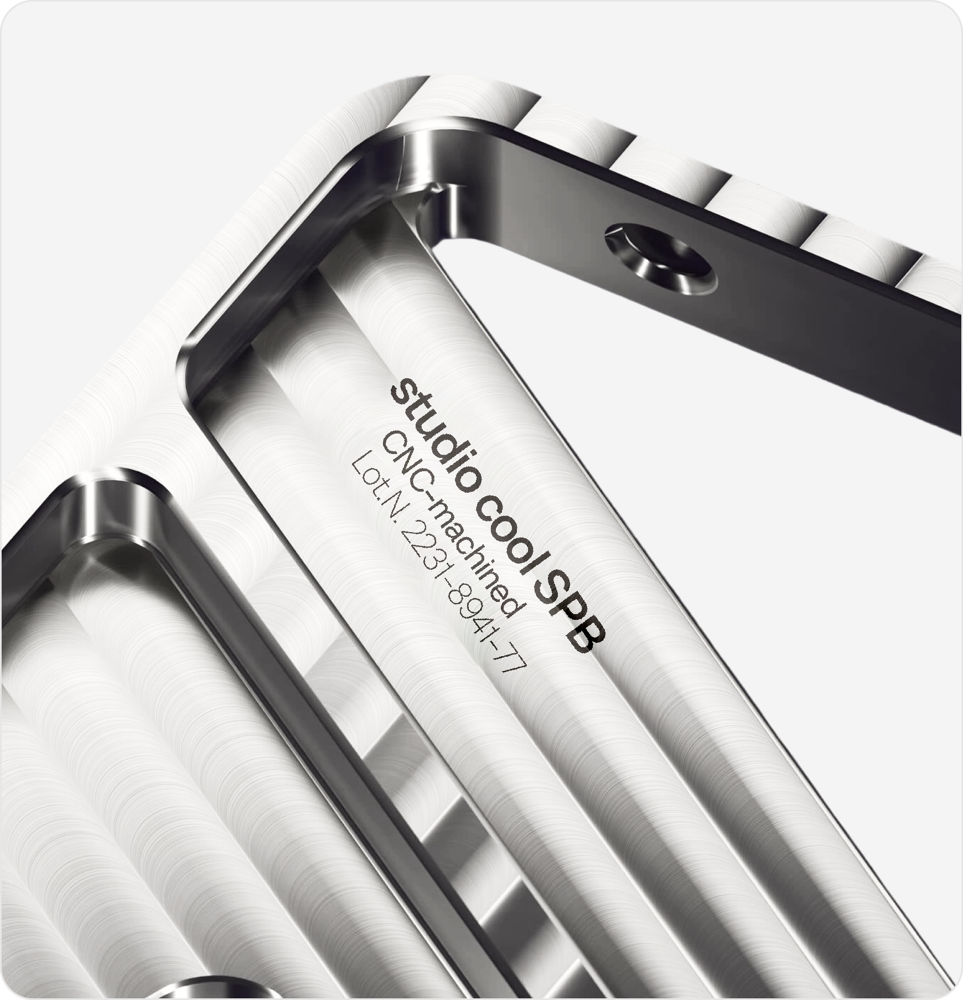
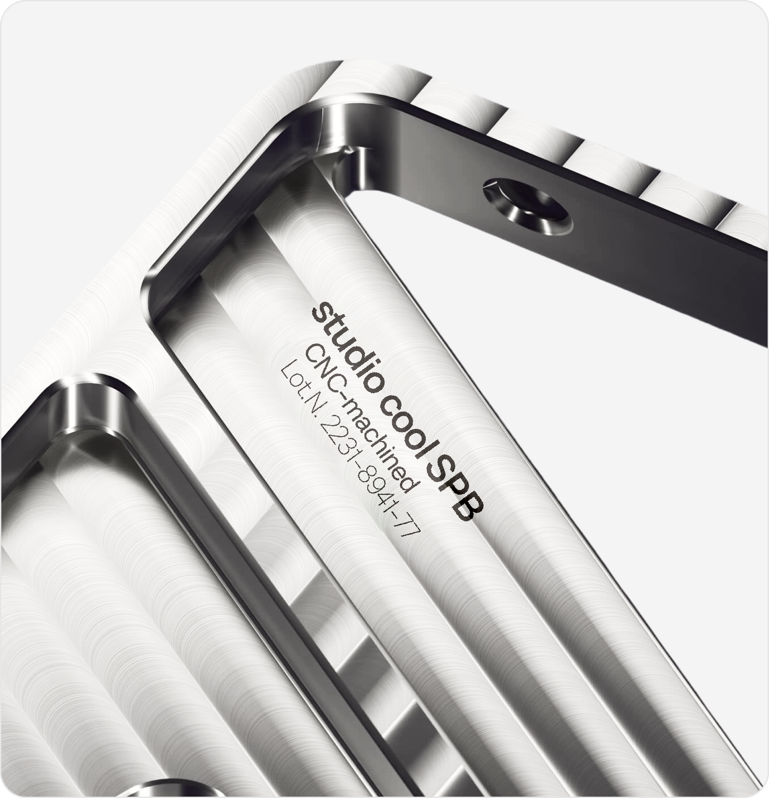

О шрифте

TT Neoris — шрифт, разработанный командой TypeType в 2023 году. Его название образовано от двух слов: “neo” — «новый» и “ris” --- «возвышение». Работа над ним длилась два с половиной года.
Это самый амбициозный проект студии: цель — создать «идеальный неогротеск», который откроет новую главу в типографике и станет бестселлером.
Его характер нейтральный, но с деталями, которые делают его уникальным.


 
